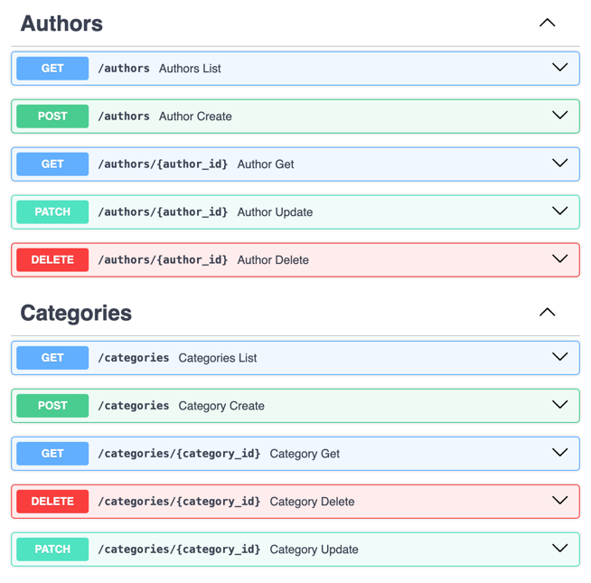

Вариант
Ваша задача - создать веб-приложение, которое позволит пользователям обмениваться книгами между собой. Это приложение должно облегчать процесс обмена книгами, позволяя пользователям находить книги, которые им интересны, и находить новых пользователей для обмена книгами. Функционал веб-приложения должен включать следующее:
Создание профилей: Возможность пользователям создавать профили, указывать информацию о себе, своих навыках, опыте работы и предпочтениях по проектам.
Добавление книг в библиотеку: Пользователи могут добавлять книги, которыми они готовы поделиться, в свою виртуальную библиотеку на платформе.
Поиск и запросы на обмен: Функционал поиска книг в библиотеке других пользователей. Возможность отправлять запросы на обмен книгами другим пользователям.
Управление запросами и обменами: Возможность просмотра и управления запросами на обмен. Возможность подтверждения или отклонения запросов на обмен.
Реализованные эндпоинты



Models
from sqlmodel import Field, Relationship, SQLModel
from enum import Enum
from typing import List, Optional
import datetime
class BookCategory(SQLModel, table=True):
book_id: int = Field(foreign_key="book.id", primary_key=True)
category_id: int = Field(foreign_key="category.id", primary_key=True)
class Category(SQLModel, table=True):
id: int = Field(default=None, primary_key=True)
name: str
books: Optional[List["Book"]] = Relationship(back_populates="categories", link_model=BookCategory)
class Author(SQLModel, table=True):
id: int = Field(default=None, primary_key=True)
name: str
books: Optional[List["Book"]] = Relationship(back_populates="author")
class BookCopy(SQLModel, table=True):
id: int = Field(default=None, primary_key=True)
book_id: Optional[int] = Field(default=None, foreign_key="book.id")
user_id: Optional[int] = Field(default=None, foreign_key="user.id")
class Book(SQLModel, table=True):
id: int = Field(default=None, primary_key=True)
name: str
author_id: Optional[int] = Field(default=None, foreign_key="author.id")
author: Optional[Author] = Relationship(back_populates="books")
categories: Optional[List[Category]] = Relationship(back_populates="books", link_model=BookCategory)
owners: Optional[List["User"]] = Relationship(back_populates="own_books", link_model=BookCopy)
class User(SQLModel, table=True):
id: int = Field(default=None, primary_key=True)
username: str
email: str
password: str
own_books: Optional[List[Book]] = Relationship(back_populates="owners", link_model=BookCopy)
shared_books: Optional[List["Sharing"]] = Relationship(
back_populates="owner",
sa_relationship_kwargs=dict(foreign_keys="[Sharing.owner_id]")
)
borrowed_books: Optional[List["Sharing"]] = Relationship(
back_populates="taking",
sa_relationship_kwargs=dict(foreign_keys="[Sharing.taking_id]")
)
class SharingStatus(Enum):
requested = "requested"
active = "active"
archived = "archived"
class Sharing(SQLModel, table=True):
owner_id: int = Field(foreign_key="user.id")
taking_id: int = Field(foreign_key="user.id")
book_copy_id: int = Field(foreign_key="bookcopy.id")
id: int = Field(default=None, primary_key=True)
owner: Optional["User"] = Relationship(back_populates="shared_books",
sa_relationship_kwargs=dict(foreign_keys="[Sharing.owner_id]")
)
taking: Optional["User"] = Relationship(back_populates="borrowed_books",
sa_relationship_kwargs=dict(foreign_keys="[Sharing.taking_id]")
)
status: SharingStatus = Field(default=SharingStatus.requested)
class CategoryIn(SQLModel):
name: str
class CategoryOut(CategoryIn):
id: int
books: Optional[List["Book"]] = None
class AuthorIn(SQLModel):
name: str
class AuthorOut(AuthorIn):
id: int
books: Optional[List["Book"]] = None
class BookIn(SQLModel):
name: str
author_id: Optional[int] = Field(default=None, foreign_key="author.id")
class BookOut(BookIn):
id: int
author: Optional[Author] = None
categories: Optional[List[Category]] = None
owners: Optional[List[User]] = None
class UserIn(SQLModel):
username: str
email: str
password: str
class UserLogin(SQLModel):
username: str
password: str
class UserPassword(SQLModel):
password: str
class UserOut(UserIn):
id: int
own_books: Optional[List[Book]] = None
shared_books: Optional[List["Sharing"]] = None
borrowed_books: Optional[List["Sharing"]] = None
Auth
class AuthService:
auth_scheme = HTTPBearer()
pwd_context = CryptContext(schemes=['bcrypt'])
SECRET_KEY = os.getenv("SECRET_KEY")
def hash_password(self, password: str) -> str:
return self.pwd_context.hash(password)
def verify_password(self, plain_password: str, hashed_password: str) -> bool:
return self.pwd_context.verify(plain_password, hashed_password)
def create_token(self, username: str) -> str:
payload = {
'exp': datetime.datetime.utcnow() + datetime.timedelta(hours=8),
'iat': datetime.datetime.utcnow(),
'sub': username
}
return jwt.encode(payload, self.SECRET_KEY, algorithm='HS256')
def decode_token(self, token: str) -> str:
try:
payload = jwt.decode(token, self.SECRET_KEY, algorithms=['HS256'])
return payload['sub']
except jwt.ExpiredSignatureError:
raise HTTPException(status_code=401, detail='Expired token')
except jwt.InvalidTokenError:
raise HTTPException(status_code=401, detail='Invalid token')
def authenticate(self, auth: HTTPAuthorizationCredentials = Security(auth_scheme)) -> str:
return self.decode_token(auth.credentials)
def get_active_user(self, auth: HTTPAuthorizationCredentials = Security(auth_scheme),
session=Depends(get_session)) -> dict:
credentials_exception = HTTPException(
status_code=status.HTTP_401_UNAUTHORIZED,
detail='Invalid credentials'
)
username = self.decode_token(auth.credentials)
if not username:
raise credentials_exception
user = session.exec(select(User).where(User.username == username)).first()
if not user:
raise credentials_exception
return user.dict()